Condensed HTML version (text ~50% shorter; full version) made by Claude (claude-opus-5-5) from the PDF; check the PDF for exact wording and figures.
Seonghyeon Ye†, Yunhao Ge*, Kaiyuan Zheng*, Shenyuan Gao*, Sihyun Yu*, George Kurian*, Suneel Indupuru*, You Liang Tan*, et al.; Yuke Zhu†, Linxi "Jim" Fan†, Joel Jang† (NVIDIA). †Project Leads, *Core Contributors. https://dreamzero0.github.io
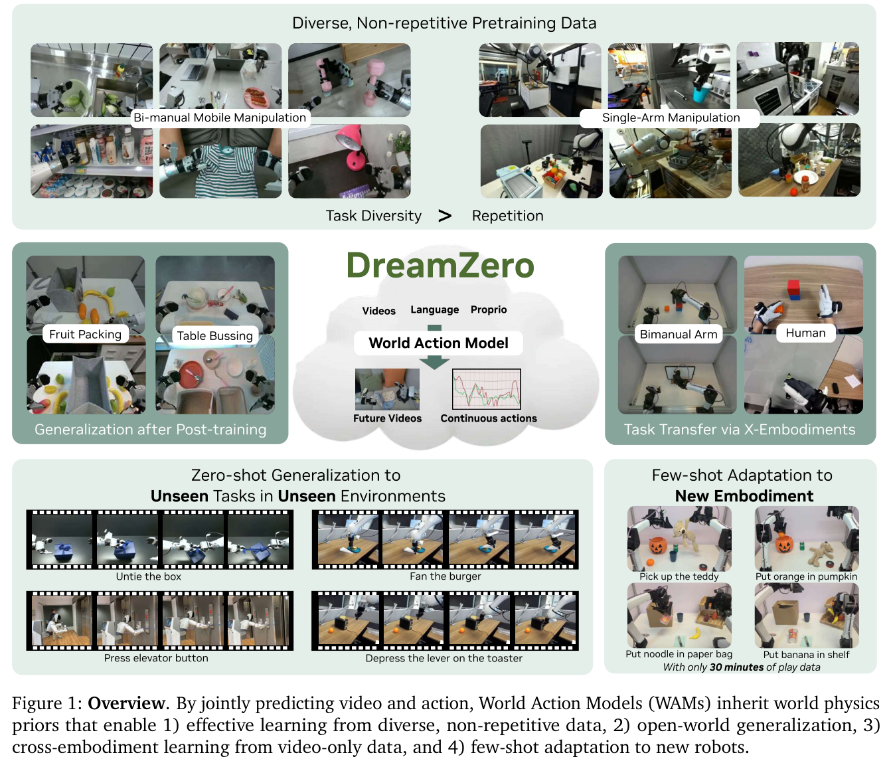
DreamZero is a 14B World Action Model (WAM) on a pretrained video diffusion backbone that jointly predicts future video and actions. It generalizes over 2× better than state-of-the-art VLAs to new tasks and environments and runs real-time control at 7Hz. Video-only data from other robots or humans improves unseen tasks by over 42% relative, and it adapts to a new robot with 30 minutes of play data.
VLAs inherit VLM semantic priors but struggle with novel motions and environments. WAMs inherit spatiotemporal priors from web video, making action learning closer to inverse dynamics. This enables learning from heterogeneous data, zero-shot generalization, and efficient cross-embodiment transfer. Contributions: the 14B model, over 2× gains on unseen verbs and motions, a 38× inference speedup for 7Hz control, cross-embodiment results, and open-source weights, inference and benchmark code.
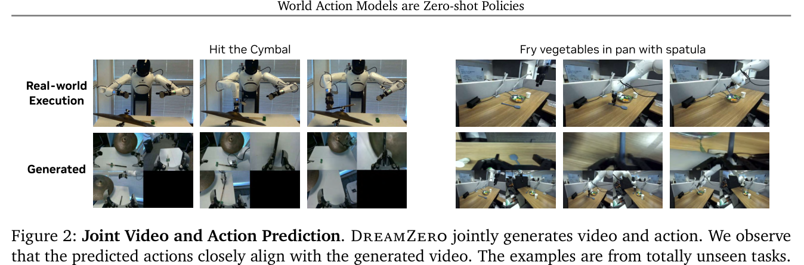
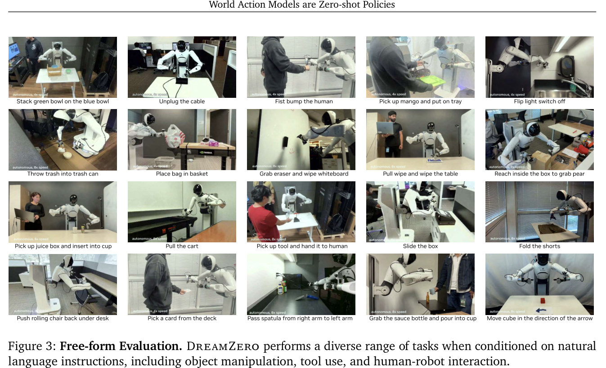
Covers modular planner-over-skills systems, end-to-end VLAs initialized from VLMs, and VLA generalization, mostly shown at object and semantic level.
Prior work extracts actions from generated videos or jointly generates both. "WAM" is used since video is only one world-modeling target; WAMs combine end-to-end gradients with dense world-modeling supervision. Appendix A compares latent and 3D world models.
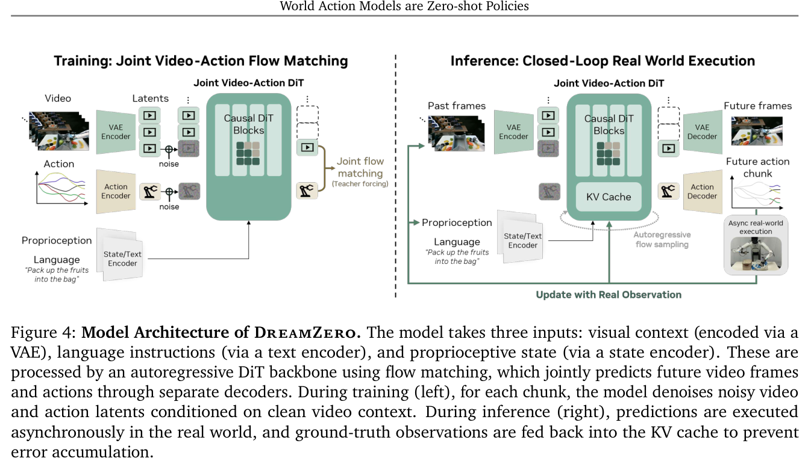
Three choices address three challenges: joint end-to-end video-action training for alignment; an autoregressive architecture that puts ground-truth observations in the KV cache; and system-, implementation- and model-level optimizations for real-time inference.
Joint prediction factorizes into video prediction and an inverse dynamics model:
\[ \pi_0(\mathbf{o}_{l:l+H},\mathbf{a}_{l:l+H}\mid \mathbf{o}_{0:l},\mathbf{c},\mathbf{q}_l)=\pi_0(\mathbf{o}_{l:l+H}\mid \mathbf{o}_{0:l},\mathbf{c},\mathbf{q}_l)\,\pi_0(\mathbf{a}_{l:l+H}\mid \mathbf{o}_{0:l+H},\mathbf{q}_l) \tag{1} \]Only small state/action encoders and decoders are added; multi-view inputs are concatenated into one frame. Generation is chunk-wise autoregressive with \(K\) latent frames per chunk, trained via flow matching with a shared video-action timestep and teacher forcing.
\[ \mathbf{z}^k_{t_k}=t_k\mathbf{z}^k_1+(1-t_k)\mathbf{z}^k_0,\quad \mathbf{a}^k_{t_k}=t_k\mathbf{a}^k_1+(1-t_k)\mathbf{a}^k_0 \tag{2} \] \[ \mathcal{L}(\theta)=\mathbb{E}\left[\frac{1}{K}\sum_{k=1}^{K}w(t_k)\left\|\mathbf{u}_\theta([\mathbf{z}^k_{t_k},\mathbf{a}^k_{t_k}];\mathcal{C}_k,\mathbf{c},\mathbf{q}_k,t_k)-\mathbf{v}^k\right\|^2\right] \tag{3} \]Naive inference takes ~5.7s per chunk. Asynchronous execution runs the current chunk (48 steps at 30Hz) while computing the next, targeting ~200ms. System level: CFG parallelism over two GPUs and DiT velocity caching (16 to 4 denoising steps). Implementation level: torch.compile with CUDA Graphs, NVFP4 quantization, cuDNN attention, GPU-side scheduler. DreamZero-Flash samples video timesteps from \(t^{video}_k=1-\eta,\ \eta\sim\mathrm{Beta}(7,1)\) with uniform action timesteps, enabling single-step inference (~350ms to ~150ms). A Savitzky-Golay filter smooths actions.
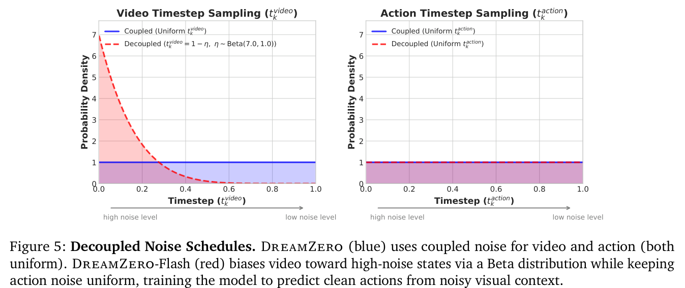
| Optimization | H100 | GB200 |
|---|---|---|
| Baseline | 1× | 1.1× |
| + CFG Parallelism | 1.9× | 1.8× |
| + DiT Caching | 5.5× | 5.4× |
| + Torch Compile + CUDA Graphs | 8.9× | 10.9× |
| + Kernel & Scheduler Opts. | 9.6× | 14.8× |
| + Quantization (NVFP4) | — | 16.6× |
| + DreamZero-Flash | — | 38× |
Table 1: Cumulative inference speedups.
Embodiments: AgiBot G1 (~500h teleoperation, 22 environments) and Franka (DROID); YAM and human egocentric data for cross-embodiment.
Baselines: GR00T N1.6 and π0.5, from scratch and pretrained, with matched compute.
Training: Wan2.1-I2V-14B backbone, 100K steps, batch 128.
Evaluation: unseen environments and objects throughout. AgiBot: 10 seen and 10 unseen tasks, 80 rollouts each; DROID: 20 seen and 20 unseen. Post-training: shirt folding (33h), fruit packing (12h), table bussing (40h).
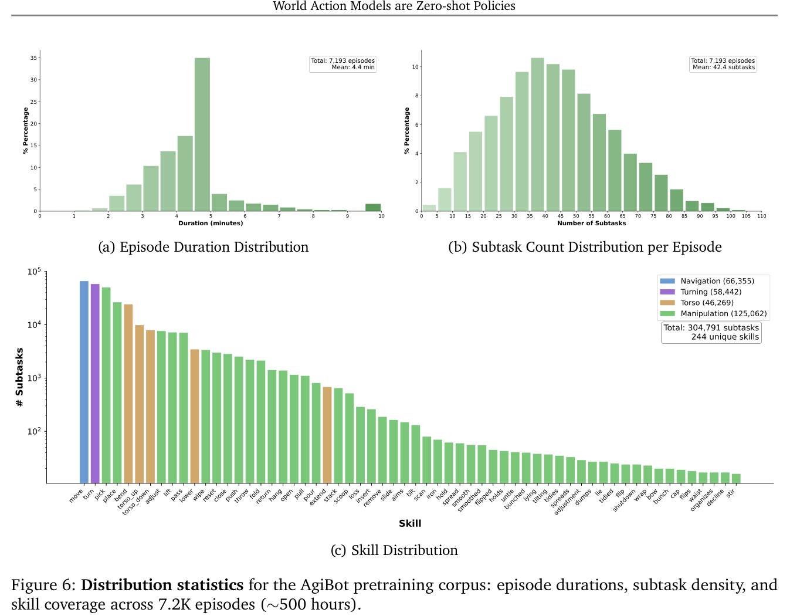
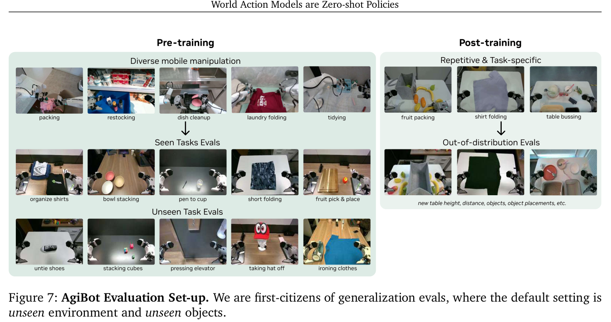
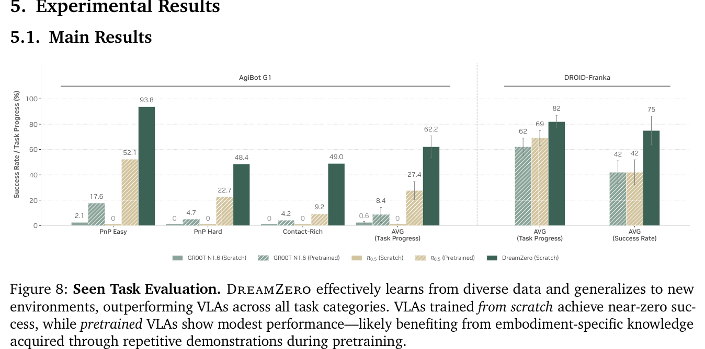
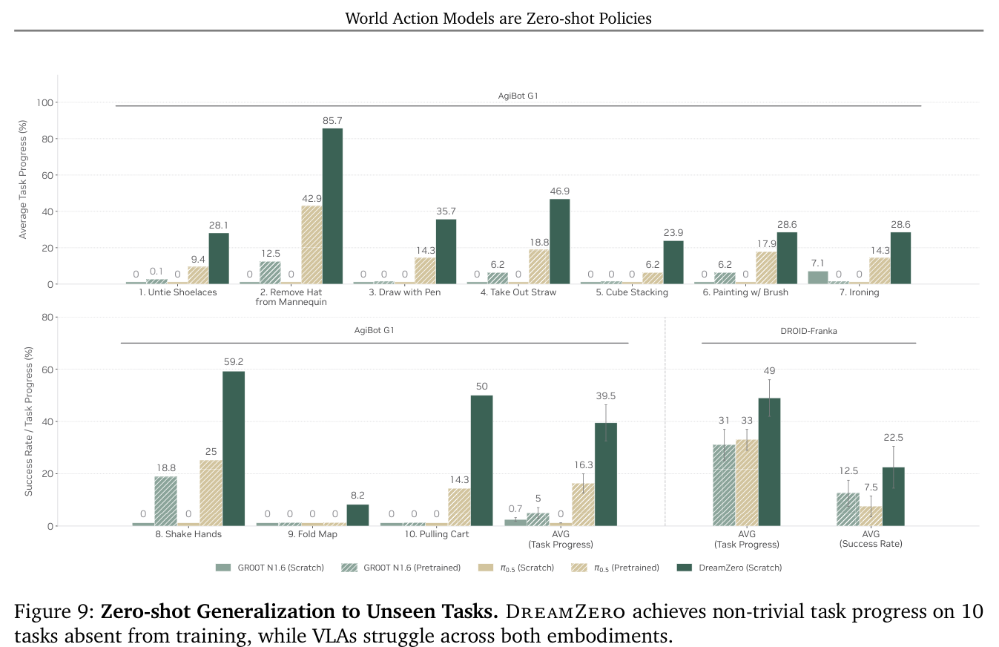
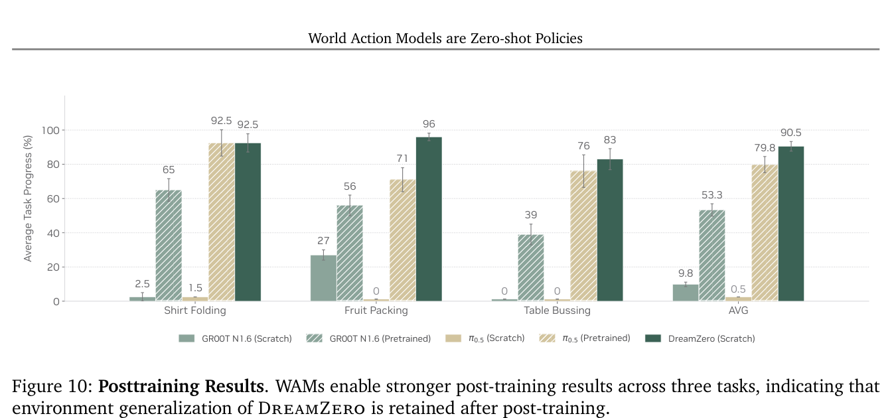
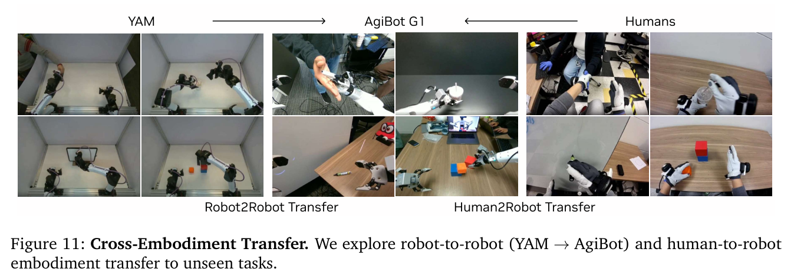
| Method | Task Progress |
|---|---|
| DreamZero | 38.3% ± 7.6% |
| + Human2Robot | 54.3% ± 10.4% |
| + Robot2Robot | 55.4% ± 9.5% |
Table 2: Cross-embodiment transfer results.
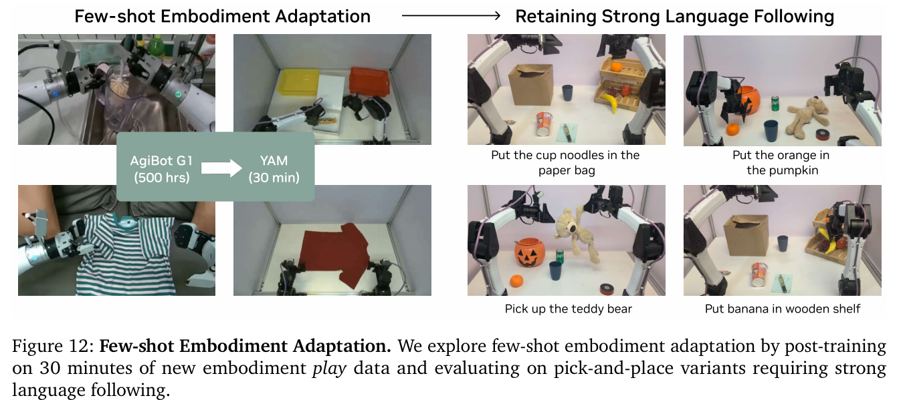
| Method | Steps | Task Progress | Latency |
|---|---|---|---|
| DreamZero | 4 | 83% | 350ms |
| DreamZero | 1 | 52% | 150ms |
| DreamZero-Flash | 1 | 74% | 150ms |
Table 3: DreamZero-Flash evaluation on table bussing.
| Setting | Size | Data | Progress |
|---|---|---|---|
| AR | 14B | Repetitive | 33% |
| AR | 14B | Diverse | 50% |
| AR | 5B | Diverse | 21% |
| VLA | 5B / 14B | Diverse | 0% |
| BD | 14B | Diverse | 50% |
Table 4: Model and data ablations (AR = autoregressive, BD = bidirectional). BD matches AR task progress, but AR is smoother and 3–4× faster.
Open directions: WAM scaling laws, in-the-wild human video, faster inference (now 7Hz on 2 GB200s), long-horizon reasoning beyond ~6s context, high-precision tasks, and embodiment trade-offs between degrees of freedom and human similarity.
Latent (JEPA, Dreamer) and 3D point-cloud models need test-time planning; WAMs output actions directly.
Bidirectional models need video subsampling to align with language, distorting native FPS; autoregressive ones don't.
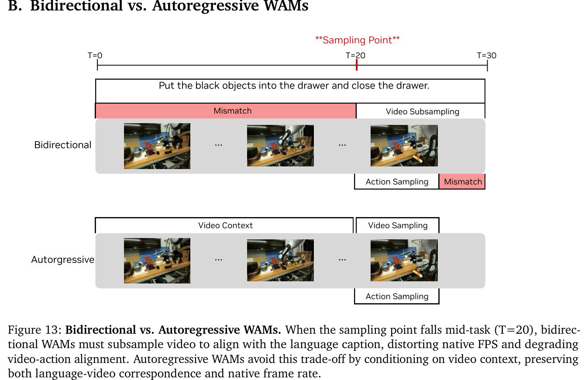
Chunk size \(K=2\) latent frames, \(M=4\) chunks. Video at 5 FPS; action horizon \(H=48\) at 30Hz (AgiBot) and \(H=24\) at 15Hz (DROID), 1.6 s per chunk.
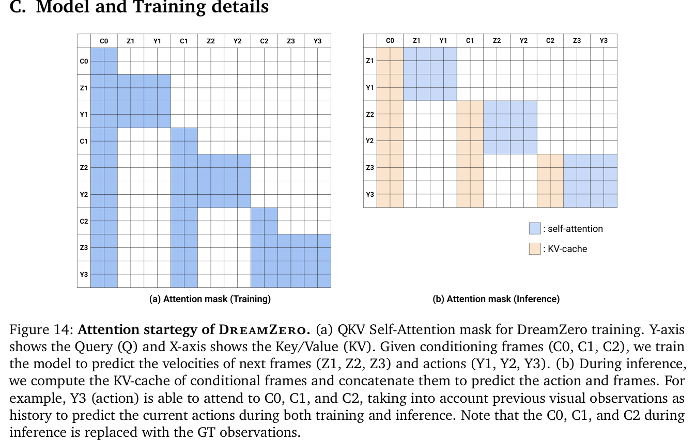
Algorithms 1–2 (paraphrased outline): Training: for each chunk, sample timestep(s) (Beta(7,1) for video in Flash mode), noise video/action latents, predict joint velocity, and minimize MSE. Inference: prefill the KV cache with the observation; loop: jointly denoise video and action (with DiT caching), filter and execute actions asynchronously, then re-encode the real observation into the KV cache.
Details on CFG parallelism, DiT caching, torch.compile, NVFP4/FP8 quantization, cuDNN SDPA, the GPU UniPC scheduler, and Flash.
Episodes combine three coarse tasks; tasks retire after 50 episodes, so the list keeps growing.
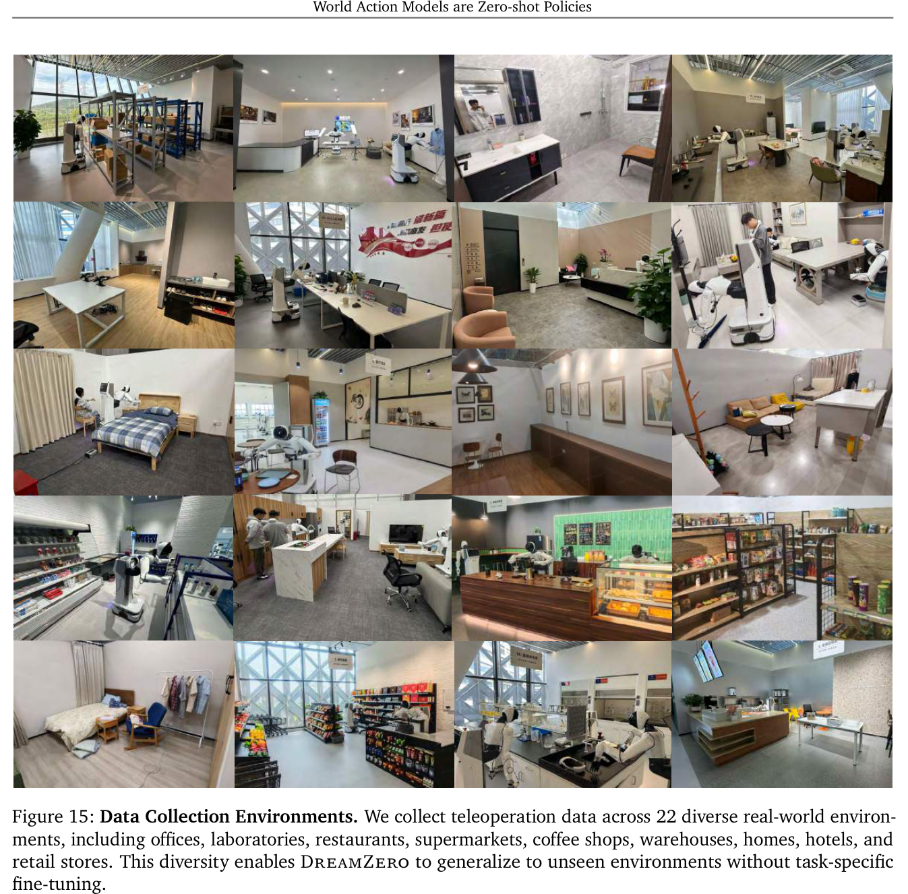
Tables 5–7 list AgiBot and DROID tasks and instructions.
Execution follows generated video, so failures stem from flawed visual plans.
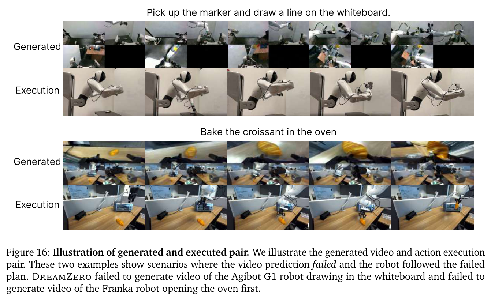